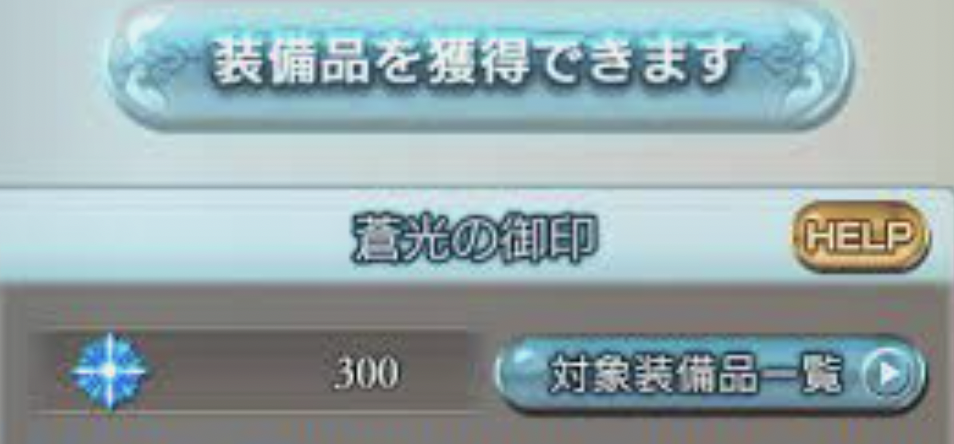

2022年4月時点の天井優先度
はじめに
この記事では2022年4月時点の天井優先度について書いています
記事の内容はレジェフェス、グラフェスで天井するのにおすすめな武器やキャラになります
もし、私が全員未所持だったら誰を優先するかというスタンスなので、かなり主観が入ったものとなっています
あくまで参考程度でお願いします
何をしたいのかで武器やキャラの取得優先度が変わるのでご了承ください
目次
前提
読み飛ばしたい方は👉（レジェフェス天井優先度）
この手の記事はたくさんあるので私が書いたところであまり参考にはならないとは思いますが、書きたいから書くところもあるのでよかったらお付き合いください
グラブルは300回レジェンドガチャを引くとラインナップにある武器（キャラクター）と交換することができます（通称天井）
フェス中はSSR出現率が6%なのでこのタイミングで天井する人がほとんどだと思います
年末年始やアニバーサリー(3月)、夏のキャンペーン期間に引くことができる無料分と合わせて天井するとガチャの費用を抑えて天井できます
天井優先度について書いていますが、推しキャラだったり強化したい属性がある場合はぜひそちらを優先してください😊
レジェフェス天井優先度
読み飛ばしたい方は👉（グラフェス天井優先度）
— YD (@YakedonGBF) April 18, 2022
ナルメア
風の短期戦で大活躍！
ナルメア加入前後ではダメージの差が圧倒的に違いました
水着コルワと組み合わせるとさらに強力です
もう取得前には戻れないほど活躍してくれています
フェディエル
3アビを押すことで火力・耐久の両方が強化されます
フィールドアビリティを使えない完全フルオートにこだわる方は優先度は下がると思います
グラフェスのリッチと組み合わせるとさらに強力です
耐久が向上するので敵の攻撃が痛い所で活躍します
ポセイドン
通常攻撃が多段ヒットのためワム槍やベリアルなどと相性が良いです
適当に編成しても火力を出してくれることが多いです
フルオートで活躍してくれています
グラフェス天井優先度
読み飛ばしたい方は👉（おまけ）
— YD (@YakedonGBF) April 18, 2022
リッチ
アビダメが強力で回復もできるので、雑に編成しても活躍してくれると思います
闇にはドロップ武器のアゴナイズがあるので、マグナでも活躍が期待できます
このアゴナイズが無課金で手に入るというのがさらにリッチの価値を高めていると思います
そして武器もほとんどの編成に入る強力なものです
2本目も自然に入るので、被っても大丈夫！
エリクサー気味の方にも嬉しいメリット！
ネハン
短期戦で大活躍してくれています
リミテッドジャンヌダルクと合わせても強いですね
光剣豪で奥義を撃ちまくる編成に入れても面白いと思います
ユニ
リッチ斧同様、強力な武器なので取得しておきたいですね
手動なら高難度でかなり活躍してくれると思います
フルオート毎ターン1アビを使うので、速度は低下します
安定重視のフルオートで回復とゲージUPを狙うなら編成候補にはなりますね
おまけ
読み飛ばしたい方は👉（まとめ）
レジェフェスとグラフェスのキャラの総合おすすめランキング
それぞれのフェスの天井優先度の記事はありふれていますが、二つのフェスを合わせて優先度をつけた記事はあまり見たことがないですよね（私だけ？）
実際初心者だったらフェスが良いことはわかるけど、じゃあどっち？ ってなると思います（私はなりました）
主観は入りますが、何かの参考になれば嬉しいです
リッチ
やっぱりリッチですかね
武器も汎用性があって有用だし、通常攻撃よりアビダメの方が万人がダメージが出しやすいと思います
ナルメア
武器は神石編成でないと使わないですが、キャラ性能で言えばやはりナルメアになると思います
リッチかナルメアか選ぶのは迷うところですが、汎用性が高いのはリッチかなと考えています
（ヒヒ掘りならナルメアですが、そんな方がこの記事を読んでいるとは思わないので！）
フェディエル
こちらもネハンかフェディエルのどちらかでかなり迷いました
フェディエルの方がこの記事の想定読者が上手く使いこなせるような気がします
どちらかというとネハンの方が中級者・上級者向けな気がします
グラフェス、レジェフェスのどちらかしか天井できない場合は、グラフェスがおすすめです
グラフェスの方が300連を回す過程で出現する武器が腐りにくいものが多いためです
具体的にはリッチ斧やユニ琴、あるいは攻刃渾身系の武器です
神石編成でこれらの武器は複数使う機会もあるため、素体は確保できるならしておいた方が役に立つと思います
ここまで優先度をつけてきました。そして手のひら返しをすることになりますが、
推しキャラがいるならその子を天井するのが良いと思います
武器やキャラの性能よりも推しキャラを天井する方がモチベの維持にも繋がりますよ！
まとめ
目次へ戻りたい方は👉（目次）
リッチ持っていないなら天井最優先だと思います
グラフェス、レジェフェスのどちらかしか天井できない場合は、武器被りも比較的嬉しいグラフェスがおすすめです
迷ったら推しキャラ！！
記事があなたのお役に立てたら幸いです
他の記事も読んでいただけると嬉しいです！